FRAYNIX / JAVA / VERIFIED EXPERIENCE
Measure the whole task.
Reduce the cost of checking.
Two bounded Java readers verify the same original bytes. Compare complete tasks, evidence-checking time and recorded motion. Six existing cases and two prospective variants; unchanged physics and decision rule.
Actual complete-task results
Java timing ends after the verified commit and retention. The final timing-file write and caller transport/polling are outside that clock; caller elapsed time is reported separately. All failed forecasts count. Calibration verification overhead is included in calibrated task measurements.
Evidence-checking time by task
Blue: serial reference. Green: two readers. Both reread the same bytes and keep all original checks. These timings exclude the subsequent export. The complete-task chart above measures the full outcome separately.
Inspect original simulated motion
Top view · X/Z metres
Object A · X position
Each stage uses up to 240 original samples for display. Full exact traces, including velocities and failed attempts, remain in the archived exports. Native kinematic handoffs start a cold contact solver. This read-only replay cannot move the active world.
One Java execution path
SourceObserved world → memory decision → isolated forecasts → actual native stages → original verification → real report checks → one world commit → complete cost record. Explicitly selected matching records build a versioned cost calibration. Evaluation never trains the model automatically.
Actual app, dated captures
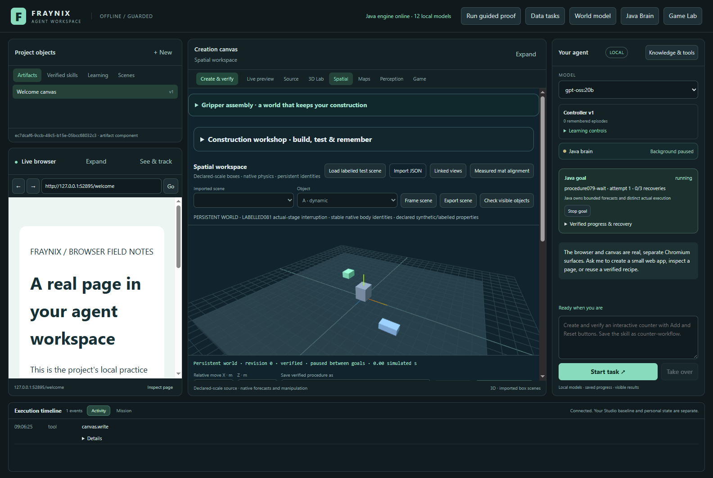
actual-before-interruption · actual isolated app capture, November 6, 2026.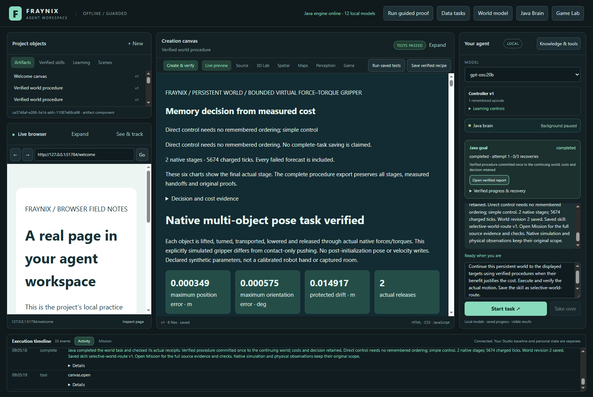
actual-procedure-report · actual isolated app capture, November 6, 2026.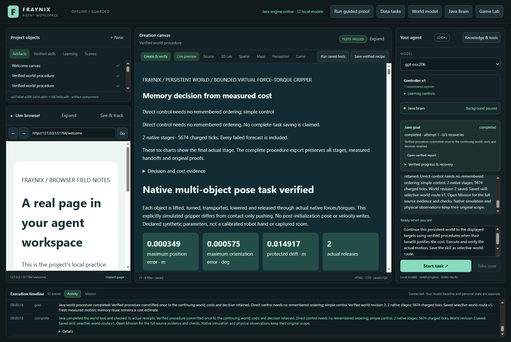
chat-completed · actual isolated app capture, November 6, 2026.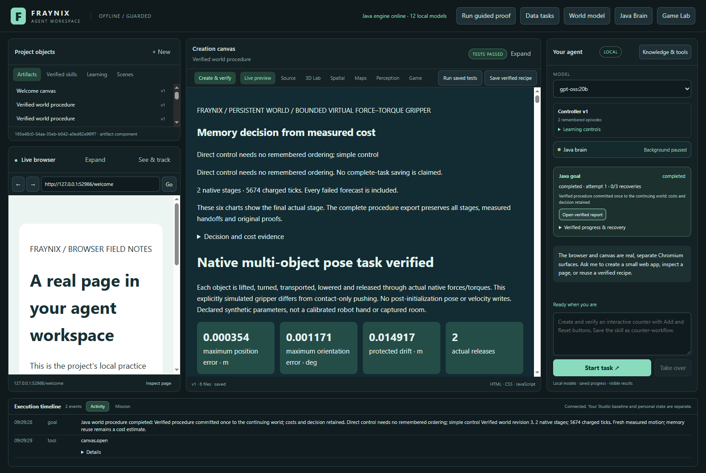
cold-skill-confirmed · actual isolated app capture, November 6, 2026.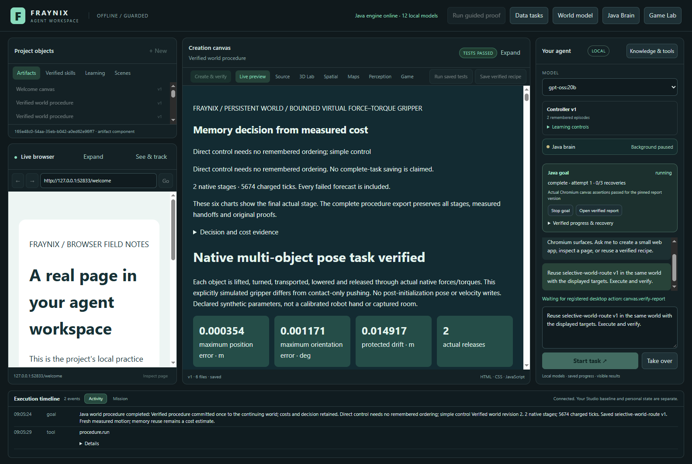
cold-skill-reuse · actual isolated app capture, November 6, 2026.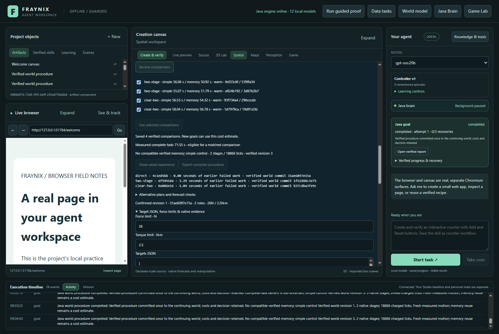
complete-task-calibration · actual isolated app capture, November 6, 2026.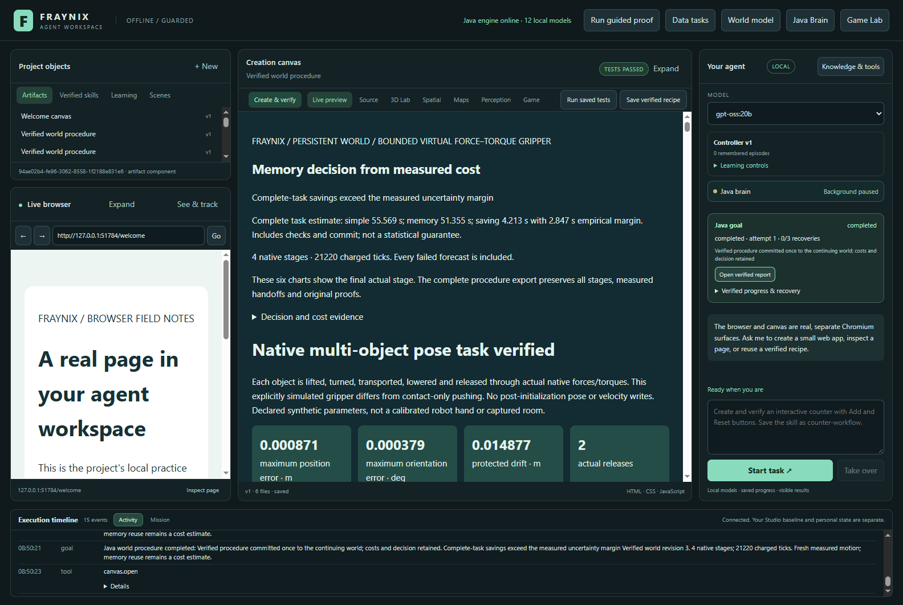
estimated-task-report · actual isolated app capture, November 6, 2026.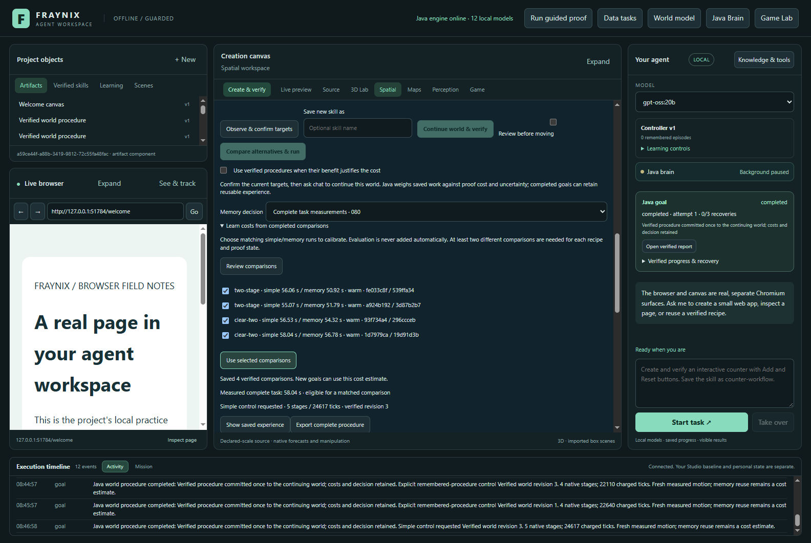
fitted-cost-comparisons · actual isolated app capture, November 6, 2026.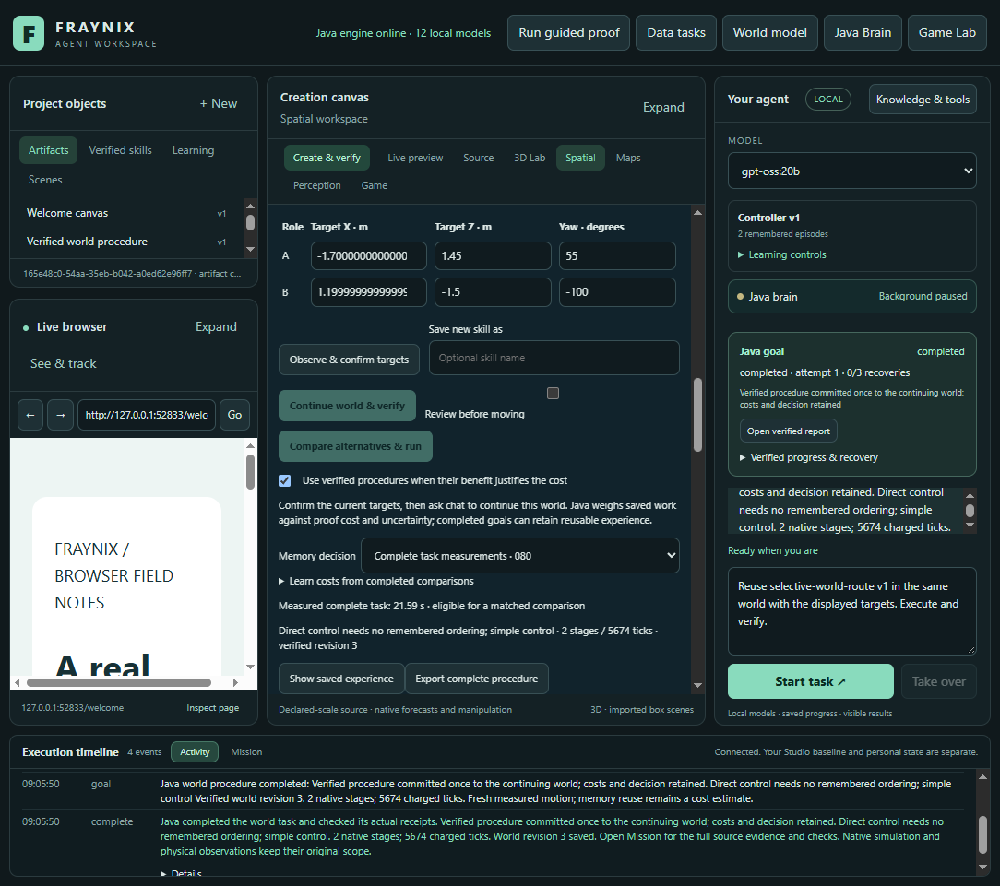
layout-1100 · actual isolated app capture, November 6, 2026.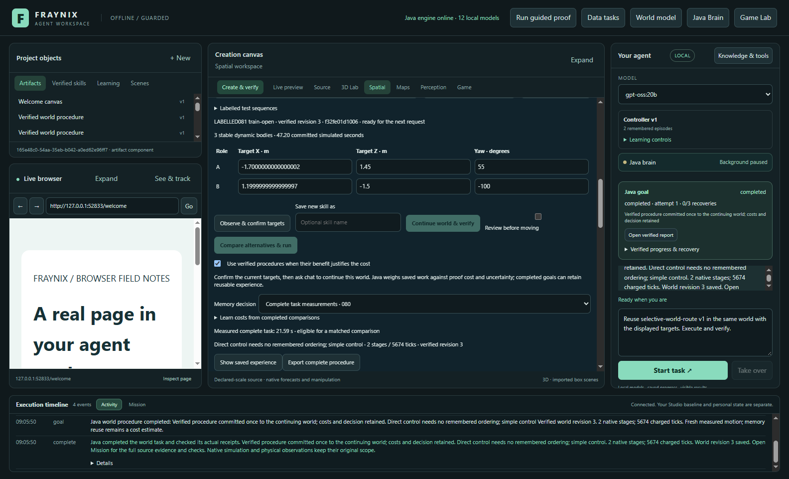
layout-1600 · actual isolated app capture, November 6, 2026.resumed-verified · actual isolated app capture, November 6, 2026.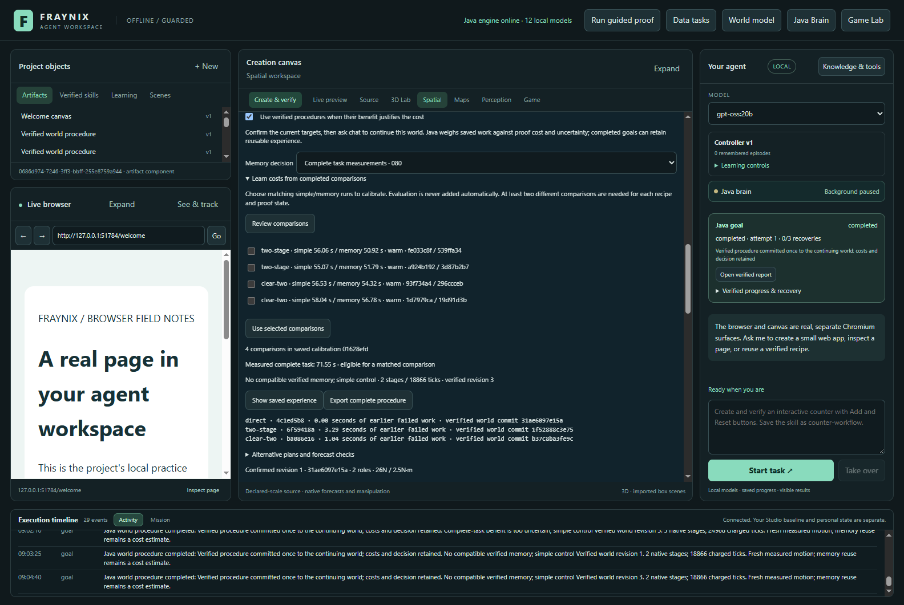
saved-experience · actual isolated app capture, November 6, 2026.stop-preserves-world · actual isolated app capture, November 6, 2026.
Next gates
Use the signed direction and magnitude of prediction errors to design another independently frozen calibration. Check timing drift, retention workloads, cold starts and longer sequences before widening coverage. Keep measured physical outcomes authoritative. These labelled simulated box tasks do not establish calibrated robot performance or general intelligence.